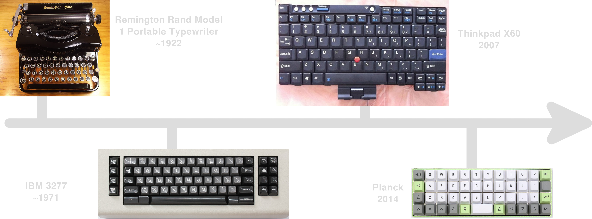
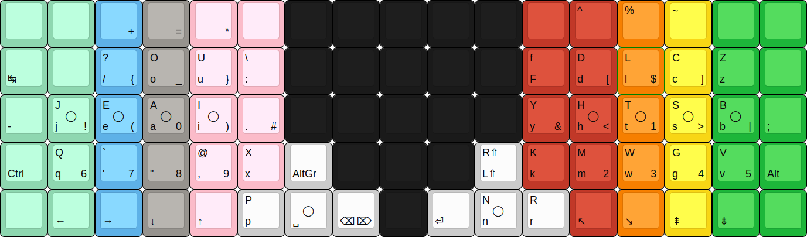

Pressing E with the thumb‽
Did you know that the letter “E” is the most common letter of the English language by a fair margin? It’s second only to space. Such an observation can also be made for the majority of European languages.

Source of the diagram. Click on the picture to enlarge it.
Now, consider the fact that from the dawn of typewriters to our days, both thumbs have been historically assigned a single key, the most important key: the spacebar. While, it’s certainly a sensible choice to let the strongest finger(s) deal with the most commonly pressed key on the keyboard, chances are that you mostly only use one of your thumbs to press the spacebar. A wide spacebar has the benefit to give the users a choice on which thumb to use. Some people always use the same thumb while some others alternate between the thumbs, using the left while gaming and using the right while typing. Meanwhile, you can also find people doing away with the thumb altogether and using the index for space instead. In any case, past some time, your spacebar is most likely going to look like this:

You can sense what I’m getting at. This is wasteful, why not let the second thumb press the second most commonly pressed character? That would certainly balance the load between your strongest digits.
Moreover, this is not the only advantage of putting E on the thumb. Naturally, as the most frequent letter, “E” is present in most common n-grams. This makes it hard to place “E” on the keyboard without increasing same finger utilization. A common strategy used by most alternative layouts is to isolate “E” (and other vowels in general, as vowels may be followed by any consonant whereas groups of consonants are rare) by putting punctuation and/or rare consonants around it. What better way to isolate “E” than to put it on the thumb?
Balanced load and greatly reduced SFU is not all! The use of thumb keys extends the amount of home keys, the keys that each of your fingers rest on, in idle state. By placing “E” on a thumb key, you gain one free home row position and any touch typist knows that the home row is prime real estate. By extension, this also widens the range of easily reachable keys on the base layer. This is great for other languages whose alphabet is extended with accented letters. For example, in French, the letter “é”, e acute, is more frequent than “v”, “h”, “g”, “f”, “b”, “q”, “j”, “x”, “z”, “y”, “k”, and “w”1 and yet is never put into the main alpha block as opposed to all the aforementioned letters (one notable exception is the Bépo layout and all its derivatives). Aside from accented characters, one can also put punctuation, additional frequently used symbols or even a macro like a dedicated “th” key if you really want to be fancy — the digraph “th” is the descendant of what used to be a standalone letter in the English alphabet, the “thorn” (Þ, þ), after all!
Obviously, this requires to do away with big, long spacebars but these have been around for the longest time and are most likely going to stay that way into the future despite the historic trend towards smaller and smaller spacebars.

This is probably why, despite the long history of typing machines, the idea of putting E on the thumb is quite novel and rather alienating to most typists.
It wasn’t until 19 May 1977, when the Maltron Mark II layout, pictured below, first appeared, that a keyboard layout was designed to use thumbs to input letters.

If you’re interested, you can read the introductory paper of the Maltron layout here.
However, there are, in fact, plenty of keyboards featuring E on their thumb keys which predate the Maltron Ergonomic Keyboard but it requires stretching the definition of typing. Typing consists in hitting individual keys to express individual letters but there exists other forms of text input such as machine stenography. Stenography has long been used to write at over 200 words per minute, faster than most people speak, with the use of chords on special stenotype machines with extremely light actuation force. Most stenographic theories put E alongside other vowels on the thumb keys. You can learn more about stenography here.
The stenotype machines pictured below were all made between 1889 and 1963, much earlier than the Maltron.


Outside of steno though, the adoption of letter thumb keys is nearly null. That can mostly be explained by path dependence and hardware limitations.
We all know that QWERTY is here to stay and that most people can’t be bothered to learn a new keyboard layout and those who do quickly face hardware limitations which prevent them from giving exotic keyboard layouts a spin. We’re thankfully past the days when Kinesis and Maltron were the only available choices for keyboards with a thumb cluster but despite the rise of DIY ergonomic mechanical keyboards, getting your hands on an ergonomic keyboard is still cost-prohibitive.
Consequently, since the (potential) user base is so small — “small” is an understatement —, there aren’t a whole lot of Malt-like alternatives (for the sake of argument, “Malt-like” merely means any layout which puts a letter on a thumb key). Despite the odds, there are Malt-like layouts out there, all very recent.
Logical layouts/keymaps which add E on the thumb:


Logical layouts/keymaps which add another letter (circled) on the thumb:
- BEAKL Zi I

- BEAKL P_RN P R N 
- BEAKL QIEA H

- X6.2h H (and all the other funky layouts made by Ian Douglas of the ergolinear X family)

- Einbinder Orthogonal

- Einbinder 1975

- BEAKRAK T (link in Japanese)

- ENNe 9640PM T

- Marsan C G (link in French) (this one is absolutely awful. there is no space key, you have to move that little stick under àÀ from right to left with your left thumb for space, everything is wrong with this “ergonomic” keyboard but I had to include it for completeness sake)

This short list will be exhaustive — leave a comment if there’s a Malt-like layout I’ve missed! — if we add in my mod to Colemak-DHm which moves E on the right thumb key like TRIA, as opposed to all those other layouts which put the letter on the left. I’ve always pressed space with my left thumb and I’m not going to change that habit any time soon. Additionally, E was on the right hand to begin with so it makes sense to keep it on the right hand.

I had recently learned and become fluid in Colemak-DHm and, while I was curious to try out E on thumb after @frogmouth brought up the topic of RSTHD on the splitkb.com Discord server, I wasn’t too fond of the idea of learning a totally new layout right after having gotten comfortable with Colemak. Later maybe, but not now. Despite these qualms, I still like experimenting with keymaps.
Thus, I went ahead and replaced the classic E position with merely shift (since I am using home row mods, the topic of a future blog post). At first, I wanted to keep backspace on the right home thumb position so I put E on the key to the left of it but I very quickly understood that this was a bad idea. The thumb key in question isn’t the most comfortable thumb key to hit and required lateral movement plus a repositioning of the thumb on its home position. For some reasons, my thumbs aren’t as good as my other fingers to find the home/resting position again so that E position was problematic. The solution would thus be to put E on my home right thumb key but I didn’t want to let go of backspace so I came up with another bad idea, magnitudes worse than the previous one. What if I turned the right thumb key into a dual-function key which yields “E” on tap and backspace on hold? Needless to say, it was impossible not to overshoot backspace like that.
Finally, I let go of my attachment to backspace’s position and let E take its place, pushing backspace to the left key, the previous position of delete. At this point, the right thumb cluster looked like this:

Now, it was time to figure out how long it would take me to get back to ~80WPM using only the thumb for “E”.
After merely a few minutes of practicing E on thumb using the terminal application “wpm”, I had already reached 57WPM for some sentences.

It didn’t take long to break through the 65WPM mark.

Then, I figured that I do not need to practice sentences with punctuations and capitalisations so much as I need to practice words containing “e” so I moved to monkey-type.com. Only 32 minutes had passed since I flashed my keyboard with E on thumb and I am already getting real close to my goal of 80WPM.

At that point, I took a break and after a full day spent without any keyboard (or computer for that matter), I went back to my typing tests. This is when I reached my goal.

In fact, I even surpassed my goal.

Despite all that, I still wasn’t fully used to E on thumb yet. More often than not, I was still hitting the previous position of E. The screenshots I’ve shared here are the results of successful sprints, they do not really reflect the casual typing speed. Disclaimers aside, this still goes to show that it’s actually not so hard to get used to E on thumb, it has only taken me a few hours to get to an acceptable speed.
However, I still was not wholly convinced by the E thumb. It’s certainly nice to have a balanced load between the two thumbs but the rolls don’t feel as satisfying. Colemak wasn’t designed to take advantage of thumb keys.
Take for example the sentence “The enter key”, here’s a side by side example of writing that sentence using the two keymaps. Tapped keys are highlighted in yellow and held modifier keys in orange.


I am no carpalx scientist but the classic DHm layout fares better in my opinion.
The way I adapted Colemak to use E on thumb is only one way, there are many other potentially better ways to implement it. Colemak mods probably can’t beat keymap layouts designed around this peculiar arrangement though.
In the end, I gave up on the E thumb. If it weren’t for the fact that it didn’t feel right in conjunction with Colemak and that I’ve since moved to using the Backspace key extensively in combos for my hybrid steno setup (more on that topic in another upcoming article), I would have certainly kept on using it as I find the idea very sound.
The most important is that the people who have gone off the beaten path and dared to learn this exotic, ergonomic design are happy about it:
I’ve tried e on thumb with RSTHD and I think it’s the way to go. It will take me time to get used to it, though so I’ve put that particular learning curve on hiatus for the near future as I’ve been a bit busy. Things I like about it:
- Remove all conflicts in bigrams with e for free
- Reduce the size of the rolls for less fatigue
- Gain one free homerow position
- Gain one free of the next priority position etc. until where you put your backspace
It feels like a lot of gain. — @pierrec about RSTHD
I like it. But I haven’t spent any time learning other layouts. It does lead to a different feel on both hands, although I’m not sure that’s any different from any other layout.
I’ve tweaked mine so the left hand fingers are used slightly more than the right, and when the whole hand is taken into account the right is used more. I think this is good, some other (ergo) layouts like modDH are all on the right. It also can give you very low SFU. However it’s not just a matter of moving something to the thumb, everything interacts, just moving a letter can lead to other issues.
The downside of course is that you have used a thumb key that might otherwise have been available for a mod or layer shift. When you look at what happens in the analyzer this can mean more thumb movement if you’re not careful, which penalizes the layout. Some of this is guesswork as the analyzers (that I’ve seen) don’t have great support for layers, the patorjk one and derivatives have a start at it with AltGr so might be a good starting point for adding more.
I was going to say that if someone wanted to try it, the best thing would be to just put either RSTHD or Malt in your keymap and give it a go to get the feel of it. However it’s not as straightforward as trying other layouts because whatever is on the left thumb key home has to move somewhere else. Also, you do need space on right thumb home and enter next to it (or possibly, shifted, I haven’t tried that yet) — @frogmouth about RSTHD
Qwerty 30+ years to Dvorak about 5 years ago. Then moved from a staggered to a premade ortho about 3 years ago. Coffee spill killed that, so back to the old staggered while waiting for the Kyria to arrive. This is all to let you know my fingers have been confused for a while now.
My thumbs are not my smartest fingers but thumb E, in use is fantastic. It’s used so often but dedicated to its own thumb. Really a great follow through.
The efficiency change from Qwerty to Dvorak was noticeable. I already feel that same sort of improvement in moving from Dvorak to RSTHD. I have no idea if I will ever change again, I don’t really see enough room left to make another leap this size in efficiency. In general, RSTHD feels much more efficient, and my RSI pain issues are reduced too.
Time will tell if I can see a speed increase too. >60WPM is fast enough for my cares, though, so speed is not a driving factor for alternate arrangements.
If you are currently using Qwerty, it is in your best interest to find a better option. — @BiggerCryptoRoi about RSTHD
RSTHD is good, and I highly recommend it. I’m on day 5 and have broken 60 wpm after 2 hrs of 1 minute typing tests. It’s very comfortable, and it feels like the workload is spread evenly between your hands. E on the homerow takes some getting used to, and the punctuation sitting in and amongst the letters is kind of unusual, but it doesn’t get in the way at all.
Seems that Colemak can type 827 words with the homerow, about 0.37% of all English words, whereas RSTHD can do 1323, which is around 0.6%. I guess that’s because you have the E on the thumb, which I’m counting as part of the homerow too
Anyway yeah, long story short, typing requires very little effort because you barely need to move your hands. — Anonymous about RSTHD
Using thumb for a common letter vastly improves finger balance across the board; it helps with other languages too, in contrast with Colemak that sometimes has, for example, underutilized ‘wrx’ column or overloaded right index finger.
The main point around Colemak (and similar layouts) is the so-called rolling, i.e., using adjacent fingers of the same hand in sequences. Well, Maltron is the original layout based on this idea; but it also relies on the keyboard’s columnar physical layout: offset columns as an adjustment for shorter/longer fingers, especially little fingers. “Ortholinear” layouts lack this feature, though. That’s why I recommend at least Atreus, or better something like Dactyl-Manuform. — /u/Schemik about Maltron

Have you ever used such layouts? Would you be willing to try it out, or is that too weird for you? Share your thoughts!
Updates Log
09 August 2020:
- Added FR-Godox to the list of Malt-like layouts
03 September 2020:
- Added STRENIA and TRIA to the list of Malt-like layouts
- ported the blog post from WordPress.com to this Jekyll site
- Changed the cover picture to @Sergi’s Kyria sporting his TRIA layout
- Moved the old cover picture to the end of the article in addition of making it transparent.
04 September 2020:
- Added BEAKL P_RN to the list of Malt-like layouts
- renamed ADNW to Malt++ (ADNW is the name of the layout optimizer algorithm used to generate the layout, not the name of the layout itself)
09 September 2020:
- Added a testimonial from an anonymous RSTHD user
- Added a paragraph on the benefits of E on the thumb
- Developed a little bit on why I gave up on E thumb
10 September 2020:
- Added ANISHTRO to the list of Malt-like layouts
- Added a mention of the “thorn” (Þ, þ) letter
20 September 2020:
- Added BEAKL QIEA to the list of Malt-like layouts
01 May 2021:
- Added Einbinder layouts to the list
Comments ¶